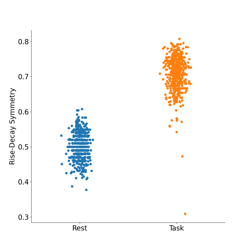

bycycle.utils.flatten_dfs¶
- bycycle.utils.flatten_dfs(dfs_features, labels, column_name='Label')[source]¶
Flatten a list of dataframes into a single dataframe with a group column(s).
- Parameters:
- dfs_features1D or 2D list of pd.DataFrames
List of dataframes returned from ~.compute_features_2D or ~.compute_features_3D.
- labels1D or 2D list
List of group labels to append to the final dataframe.
- column_namestr, optional, default: ‘Label’
The name of the column used to identify sub-dataframes.
- Returns:
- df_featurespd.DataFrame
A single dataframe containing 1 or 2 group columns.
Examples
Flatten an epoched a dataframe:
>>> from neurodsp.sim import sim_bursty_oscillation >>> from bycycle.features import compute_features >>> from bycycle.utils.dataframes import epoch_df >>> fs = 500 >>> sig = sim_bursty_oscillation(10, fs, freq=10) >>> df_features = compute_features(sig, fs, f_range=(8, 12), center_extrema='peak') >>> dfs_features = epoch_df(df_features, len(sig), fs) >>> df_features = flatten_dfs(dfs_features, ["{sec}s".format(sec=sec) for sec in range(10)])
Examples using bycycle.utils.flatten_dfs¶

4. Running Bycycle on 2D Arrays
4. Running Bycycle on 2D Arrays